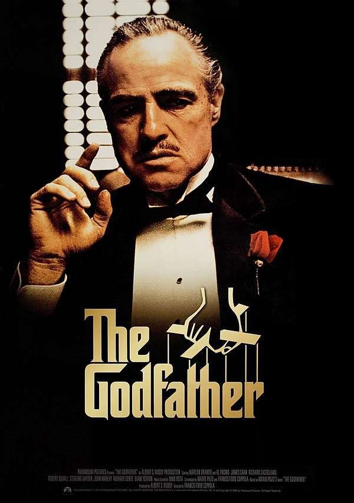
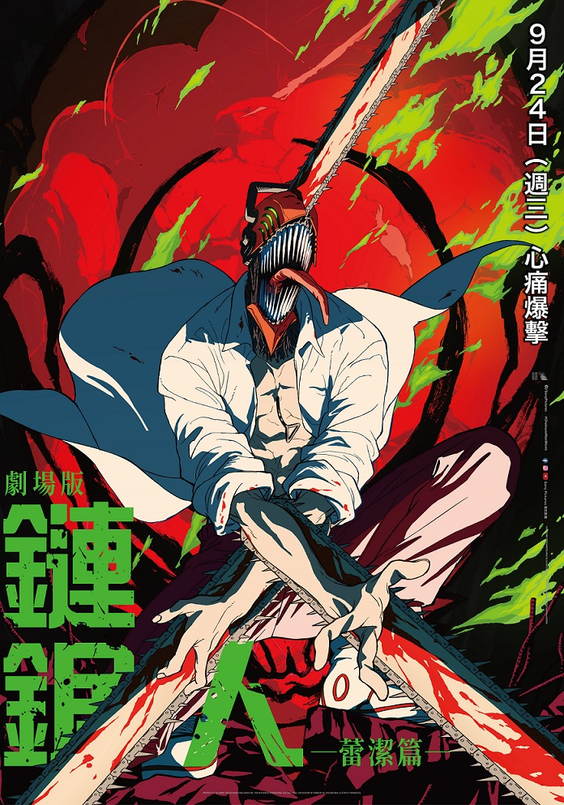

鏈鋸人蕾潔篇
為償還父母債務而替黑道打工的惡魔獵人淀治，被背叛殺害。危急之際，他與鏈鋸惡魔波奇塔締結契約，化身無敵「鏈鋸人」。當神秘少女蕾潔闖入他的世界，淀治將在殘酷的生存遊戲中，迎接史上最致命的對決與命運漩渦。
▶ 在Youtube觀看預告片康斯坦汀：驅魔神探
康斯坦汀（基努李維飾）生下來就擁有他不想要的天賦，他能夠辨識藏身在人世間的混種天使和惡魔，他為了逃避這種能力給他的折磨，於是選擇自殺一途。但是他在自殺失敗之後被放逐在天堂與地獄之間的人世間，希望能藉由向地球上的魔鬼爪牙宣戰得到救贖。
▶ 在Youtube觀看預告片阿凡達:火與燼
第三部曲《阿凡達：火與燼》更要帶大家進入潘朵拉星球上從所未見的新領域，除了《阿凡達：水之道》新登場的納美礁人族—美卡伊納族，這次還會介紹兩支新的納美族群登場，帶來全新角色。另外本片格局也再度全面提升，精彩刺激的陸、海、空戰等突破視覺震撼的史詩級大戰場面，都將更勝以往！
▶ 在Youtube觀看預告片F1
本片由《捍衛戰士：獨行俠》導演約瑟夫柯金斯基執導，布萊德彼特主演，影片為求逼真，於真實的「大獎賽」賽事期間拍攝。布萊德彼特在片中飾演退役後復出的賽車手，達姆森伊卓瑞斯則飾演他在虛構車隊「APXGP」中的隊友； 強大的卡司陣容還包含獲奧斯卡金像獎提名的凱莉肯頓、奧斯卡金像獎得主哈維爾巴登、艾美獎得主和獲金球獎提名的托比亞曼齊司、莎拉奈爾斯、金波德尼亞和山姆森卡優。
▶ 在Youtube觀看預告片一百公尺
因為天生跑得快，富樫不只獲得了「朋友」，還獲得了「容身之處」。為了躲避殘酷的現實，轉學生小宮拼命地不斷奔跑。為了教導小宮跑得更快的方法， 富樫邀請他下課後一起練習。找到了願意投入的事情後，小宮全心地追求自己的紀錄。此後兩人在一百公尺賽跑的領域裡，發展出既是競爭對手又是好友的關係。 幾年後，以天才跑者聞名於世，卻對自己必須持續獲勝而感到害怕的富樫的面前，出現了已經成為一流跑者的小宮——。
▶ 在Youtube觀看預告片